Обновляем гайд
Мы улучшаем интерфейс и актуализируем текстовое руководство. Некоторые разделы ещё дорабатываются. Уже сейчас вы можете посмотреть видеоинструкцию по Arena.ai и начать знакомство с нейросетями.
Смотреть видео · 28 минНейросети
Все шаги в одном месте: от первого входа до работы с текстами, изображениями и сложными задачами.
Ваш прогресс
0%Видеоинструкция по Arena.ai
Смотрите руководство прямо на этой странице, в удобном темпе.
Главы видео
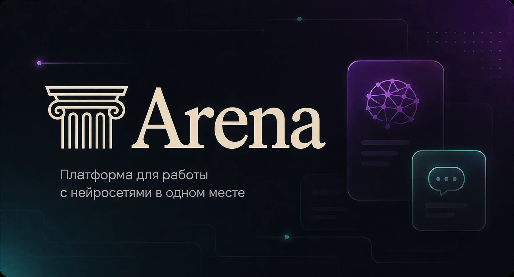
👋 Всем привет! Меня зовут Alexandr.
Я регулярно тестирую различные нейросети, AI-сервисы и инструменты, которые могут упростить работу, обучение, создание контента, программирование и обычные повседневные задачи.
Сегодня хочу рассказать про Arena.ai — сервис, который позволяет работать с большим количеством современных нейросетей в одном месте.
В этой инструкции я расскажу как пользоваться данным агрегатором:
Важно: Arena.ai активно развивается, поэтому со временем названия моделей, лимиты и расположение отдельных элементов интерфейса могут изменяться.
Регистрация в Arena.ai
Часть возможностей Arena можно посмотреть без аккаунта, но для полноценного использования лучше сразу зарегистрироваться.
Для этого:
- Откройте Arena.ai.
- Нажмите Login.
- Выберите способ регистрации.
Доступно два основных варианта:
— Войти через Google
Нажмите:
Continue with Google
После этого выберите Google-аккаунт и подтвердите вход.
Это самый быстрый вариант.
— Зарегистрироваться через email
Указывайте свою электронную почту.
После регистрации на неё придёт письмо для подтверждения аккаунта.
После входа Arena сможет сохранять историю ваших чатов и синхронизировать её между устройствами.
Главные режимы Arena
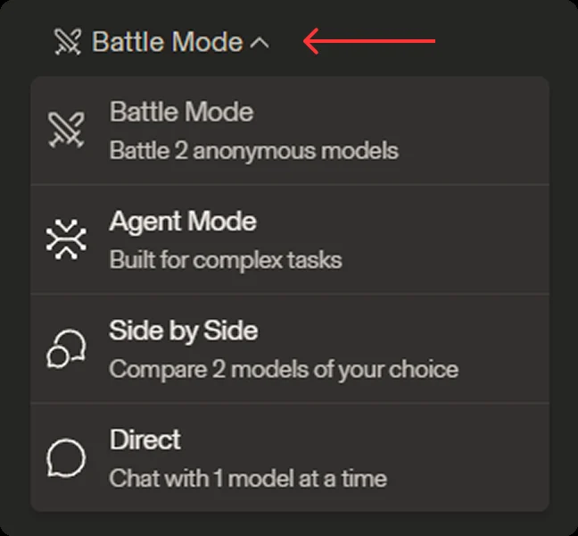
После входа обратите внимание на переключатель режимов, его вы сможете найти под названием Battle Mode. (Посмотрите изображение)
У Arena несколько вариантов работы, и они нужны для разных задач.
Основные:
- Battle mode
Сравнение двух неизвестных заранее моделей.
- Agent Mode
Продвинутый режим для выполнения сложных многоэтапных задач.
- Side-by-Side
Одновременное сравнение двух выбранных моделей.
- Direct
Обычный чат с конкретной выбранной нейросетью.
Для обычного использования чаще всего нужен именно Direct.
Battle Mode — битва нейросетей
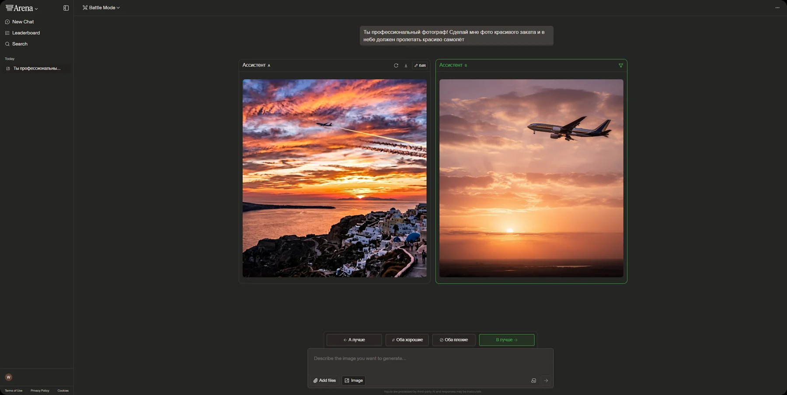
Battle Mode — это режим, где один и тот же вопрос отправляется сразу двум нейросетям.
Главная особенность — вы не видите названия моделей заранее.
Например, вы пишете:
Придумай название и описание для интернет-магазина детской одежды.
Arena покажет два ответа:
Ответ A
и
Ответ B
Вы читаете оба варианта и выбираете тот, который понравился больше.
После голосования Arena покажет, какие именно нейросети отвечали.
Это удобно, потому что вы оцениваете именно качество ответа, а не выбираете модель только из-за известного названия вроде GPT, Claude или Gemini.
Иногда может оказаться, что лучший ответ дала нейросеть, которой вы раньше вообще не пользовались.
Battle Mode помогает находить сильные модели и одновременно участвует в формировании рейтинга нейросетей на Arena.
Agent Mode
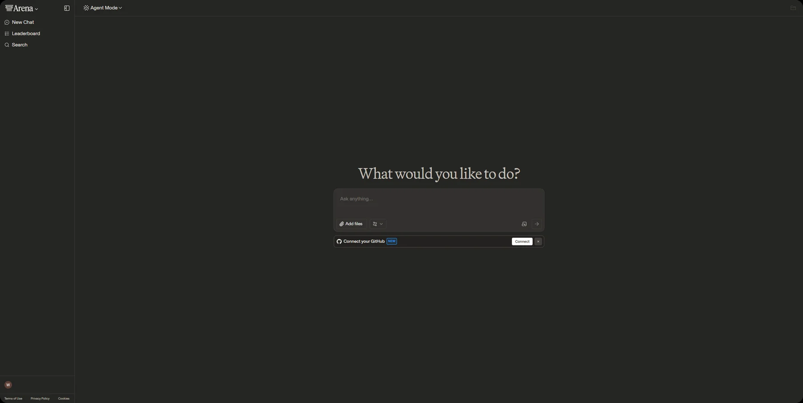
Agent Mode нужен, когда одного простого ответа недостаточно и задачу нужно выполнить в несколько этапов.
Например, можно написать:
Изучи конкурентов среди сервисов доставки еды, сравни их цены и возможности, а затем составь таблицу и предложи идеи для нового сервиса.
Агент сам разделит задачу на несколько шагов, соберёт нужную информацию, проанализирует её и подготовит результат.
Также в Agent Mode можно подключить GitHub. Это удобно разработчикам: агент сможет работать с кодом и репозиториями, помогать искать ошибки, разбирать структуру проекта и предлагать изменения.
Agent Mode удобно использовать для исследований, анализа данных, работы с кодом, файлами и других сложных задач.
Для обычных вопросов, например:
Сколько планет в Солнечной системе?
достаточно обычного режима Direct.
Side-by-Side — две нейросети одновременно
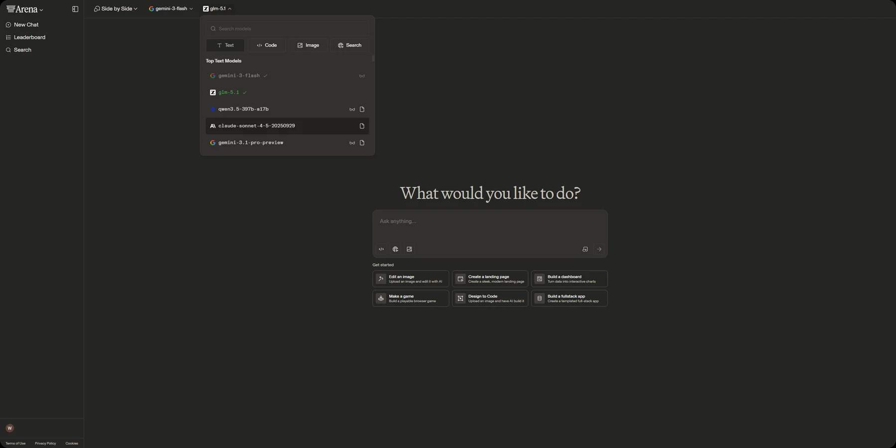
Режим Side-by-Side позволяет задать один вопрос сразу двум нейросетям и сравнить их ответы.
Например, выбираем GPT и Claude и пишем:
Составь меню на неделю для семьи из 4 человек.
Обе нейросети ответят на один и тот же вопрос, а их ответы появятся рядом.
Вы сможете сразу посмотреть, какой вариант вам понравился больше и какая нейросеть лучше справилась с задачей.
Direct — обычный режим общения
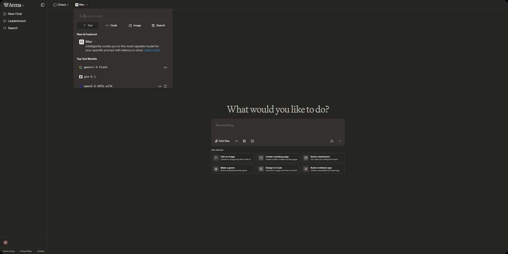
Это самый простой режим Arena.
Здесь вы сами выбираете нужную нейросеть и общаетесь с ней как в обычном чате.
Например, выбираете GPT, Claude или Gemini и пишете:
Составь меню на неделю для семьи из 4 человек.
Нейросеть сразу даст ответ.
Через Direct удобно задавать обычные вопросы, писать тексты, переводить, работать с кодом, анализировать информацию и решать повседневные задачи.
Если не нужно сравнивать несколько моделей между собой, чаще всего достаточно именно Direct.
Инструменты и возможности режимов
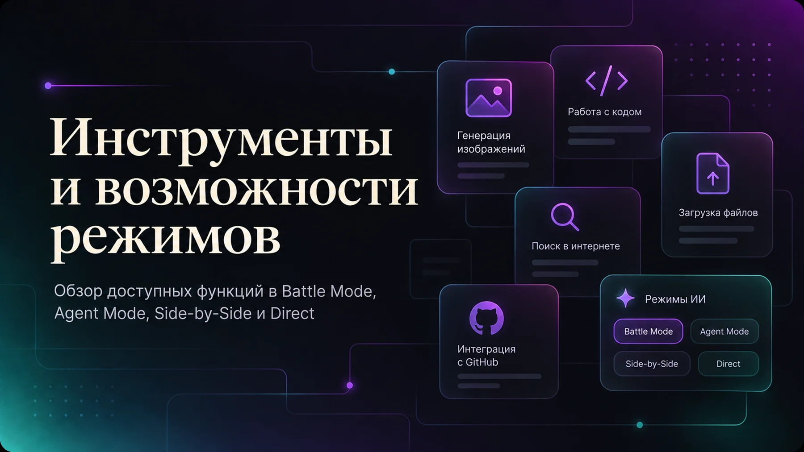
В Arena.ai в каждом режиме доступны свои инструменты.
Например, в одном режиме можно создавать изображения и работать с кодом, а в другом — загружать файлы или подключать GitHub.
Arena автоматически показывает только те функции, которые доступны в выбранном режиме.
⚔️ Battle Mode
В Battle Mode доступно больше всего инструментов.
Здесь можно:
• загружать файлы;
• автоматический подбор под запрос
• работать с кодом;
• искать информацию в интернете;
• генерация
изображений;
• генерация видео;
Главная особенность этого режима — вы отправляете один запрос и можете сравнить, как разные нейросети справились с одной и той же задачей.
🤖 Agent Mode
В Agent Mode набор функций отличается.
Здесь доступны:
• загрузка файлов;
• подключение GitHub;
Этот режим предназначен для более сложных задач, где нейросеть может работать с файлами или проектами.
↔️ Side-by-Side
В Side-by-Side можно выбрать две нейросети и получить два ответа на один запрос.
Здесь доступны:
• загрузка файлов;
• работа с кодом;
• поиск информации в интернете;
• генерация изображений;
Это удобно, если вы хотите сразу сравнить результаты двух моделей.
💬 Direct
Direct — обычный режим общения с одной выбранной нейросетью.
Здесь доступны практически те же функции, что и в Side-by-Side:
• загрузка файлов;
• работа с кодом;
• поиск информации в интернете;
• генерация изображений;
Также в Direct есть удобная функция Max.
Вы можете выбрать нейросеть самостоятельно или нажать Max.
Если выбрать Max, Arena.ai сначала анализирует ваш запрос, а затем автоматически подбирает подходящую модель для выполнения задачи.
Например, вы отправили запрос на создание кода — Arena постарается подобрать модель, которая лучше подходит для программирования.
Это удобно, если вы не знаете, какую именно нейросеть лучше выбрать.
🧠 Как Arena подбирает модели под выбранную функцию
Здесь всё устроено достаточно просто.
Если вы выбираете определённую функцию, Arena.ai показывает только те модели, которые умеют с ней работать.
Например:
Вы выбрали генерацию изображений → Arena покажет модели, которые умеют создавать изображения.
Вы выбрали работу с кодом → будут показаны модели, подходящие для программирования.
Вы выбрали другую функцию → список моделей также изменится под выбранную задачу.
То есть вам не нужно запоминать возможности каждой нейросети и самостоятельно искать подходящую модель.
Вы выбираете, что хотите сделать, а Arena.ai показывает подходящие для этой задачи модели.
Это делает работу с сервисом намного проще и удобнее.
Кнопка Max — Arena сама выбирает модель
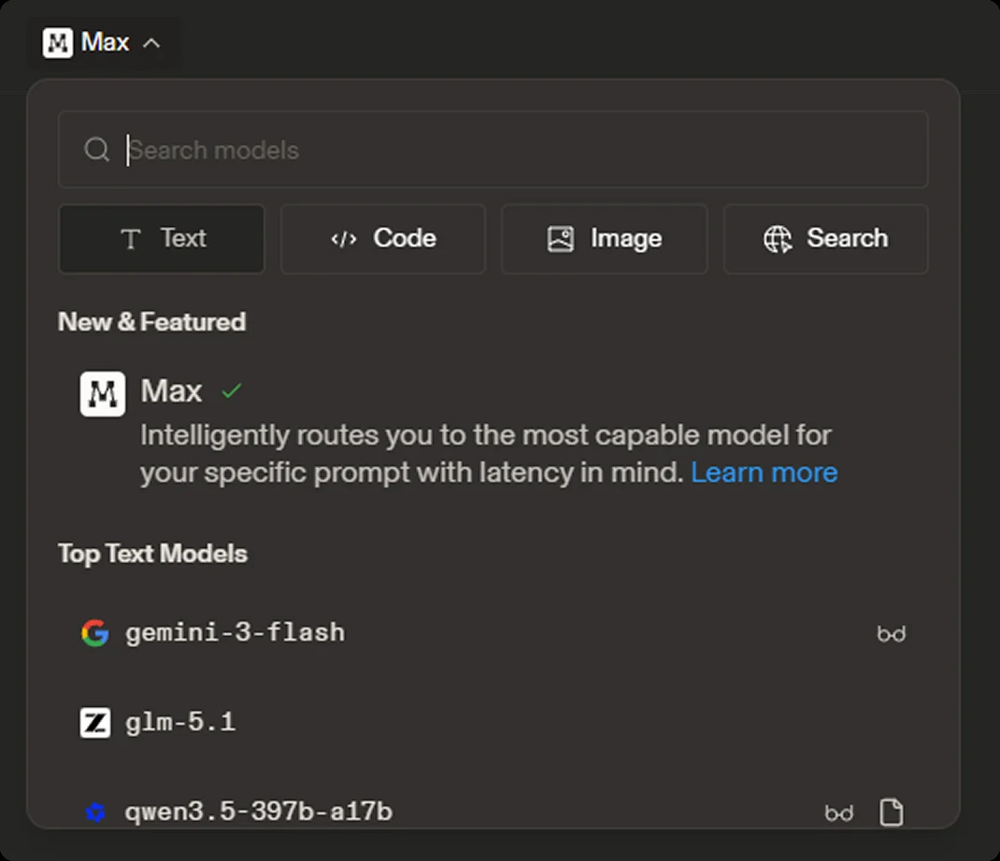
Max — это режим, в котором Arena сама решает, какую нейросеть лучше использовать для вашего запроса.
Например, вы пишете:
Составь структуру сайта для службы доставки еды.
Arena сама подберёт подходящую модель и обработает запрос.
Max удобно использовать, если вы не хотите разбираться, что лучше выбрать — GPT, Claude, Gemini или другую нейросеть.
Если хотите самостоятельно выбрать конкретную модель, используйте режим Direct.
Обозначения кнопок для генерации
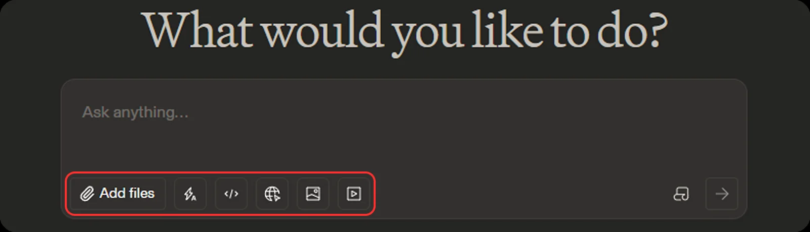
Под строкой для сообщения находятся дополнительные кнопки, снизу описал их по порядку:
➕ Add files — загрузить фотографию, PDF или другой файл и попросить нейросеть его изучить.
⚡ Auto — Arena сама определит, какой режим лучше подходит для вашего запроса.
</> Code — создание сайтов, приложений и работа с кодом.
🌐 Web — поиск и работа с информацией из интернета.
🖼️ Изображение — генерация и редактирование картинок.
🎬 Видео — генерация видео по вашему описанию или изображению.
Например для создания изображения:
Создай изображение современного загородного дома зимой.
Важно: если вы хотите создать изображение, код/сайт или видео, сначала нажмите на соответствующую кнопку под строкой ввода (посмотрите фото), а уже после этого напишите свой запрос. Для генерации изображений Arena отдельно требует включить режим Generate Image.
Лимиты агрегатора Arena.ai
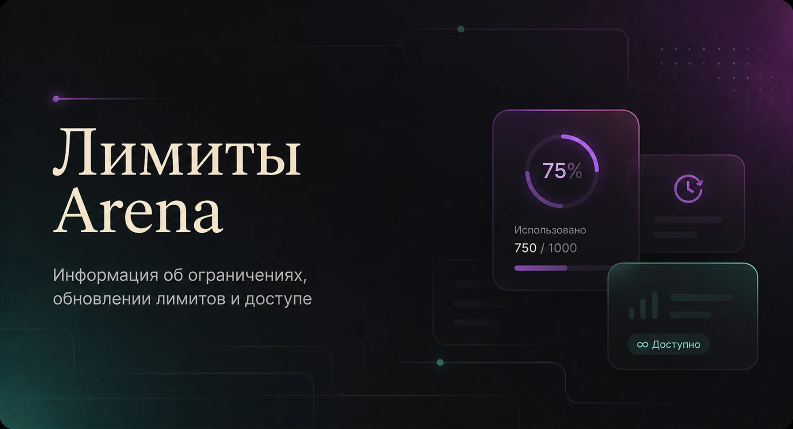
В Arena есть ограничения на количество запросов.
Лимиты могут отличаться в зависимости от выбранной нейросети и режима. Если лимит закончился, Arena покажет соответствующее сообщение — в этом случае нужно просто дождаться его обновления.
Общий дневной лимит восстанавливается автоматически примерно через 24 часа.
Также у некоторых функций есть отдельные ограничения. Например, генерация видео сейчас ограничена двумя генерациями за 24 часа.
Совет: лучше зарегистрироваться и войти в аккаунт — для авторизованных пользователей лимиты выше, чем без регистрации.
Если вы планируете генерировать видео, рекомендую использовать Battle Mode — у некоторых моделей могут быть отдельные лимиты на генерации.
Если вы упёрлись в лимит, попробуйте:
- включить VPN;
- сменить страну в VPN, если текущая локация уже ограничена;
- использовать другой аккаунт.
Для активной работы с видео удобно заранее иметь несколько аккаунтов. Например, я использую 4 Google-аккаунта и 1 аккаунт на обычной почте — для моего объёма генераций этого вполне хватает.
Небольшой лайфхак: если на одном аккаунте закончились доступные лимиты, можно перейти на другой аккаунт и продолжить работу.
На данный момент ограничений на количество используемых аккаунтов нет, поэтому при частой генерации видео несколько аккаунтов заметно упрощают
работу.
Лимиты на разные категории генерации — по моему личному опыту:
📝 Текст — ни разу не сталкивался с лимитами.
🖼️ Изображения — также ни разу не упирался в ограничения.
🎬 Видео — обычно доступно примерно 3-5 генераций в день, в зависимости от модели.
🤖 Agent Mode — данным режимом не пользуюсь, поэтому точно сказать по лимитам не могу.
Дополнительная информация для пользователей
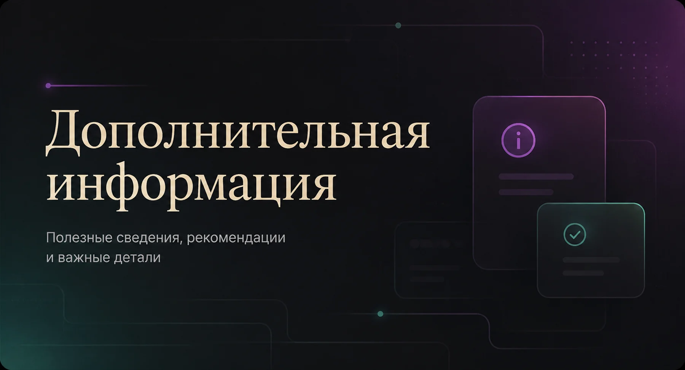
Если у Вас не открывается сайт:
По статистике последних заказов, у некоторых покупателей сайт может не открываться с первого раза.
Чаще всего проблема связана с блокировкой со стороны интернет-провайдера или мобильного оператора. Особенно часто сложности возникают у пользователей Tele2 и Билайн. Например, через МТС сайт обычно открывается без проблем.
Если сайт у вас не загружается:
- Включите VPN.
- Полностью закройте страницу сайта.
- Откройте сайт заново.
В большинстве случаев после включения VPN всё начинает работать.
Если проблема останется — обязательно напишите мне. Постараюсь помочь и разобраться вместе с вами.
Обычно я на связи примерно с 8:00 до 23:00 по московскому времени и стараюсь отвечать как можно быстрее. Днём иногда могу ответить с небольшой задержкой, поэтому если сразу не ответил — сообщение обязательно увижу.
Если что-то непонятно, не получается войти или возник любой другой вопрос — просто напишите мне. Всегда постараюсь помочь.
Как добавить Arena.ai на iPhone и использовать как приложение
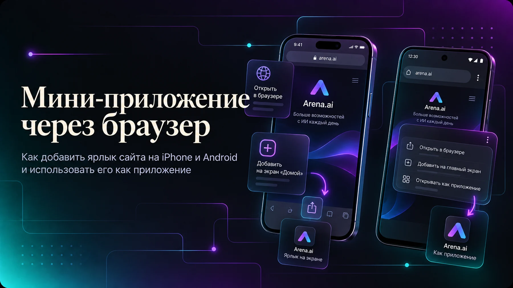
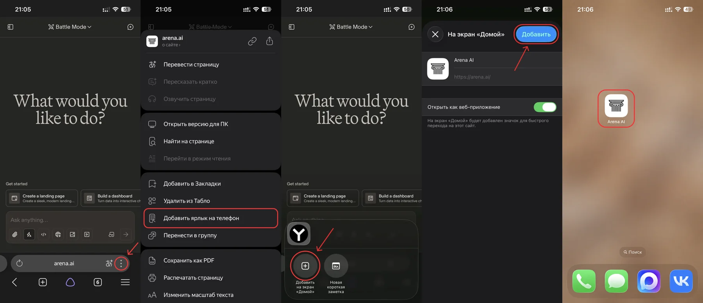
У Arena.ai нет необходимости каждый раз вручную открывать браузер и вводить адрес сайта.
Вы можете добавить Arena.ai прямо на главный экран iPhone. После этого на телефоне появится отдельный значок Arena AI, на который можно нажимать практически так же, как на обычное приложение.
Все делается буквально за несколько шагов:
1. Откройте Arena.ai в Яндекс Браузере
2. Откройте меню Яндекс Браузера
В нижней части браузера нажмите на кнопку ⋮ с тремя точками.
Откроется дополнительное меню браузера.
3. Нажмите «Добавить ярлык на телефон»
Пролистайте меню немного ниже и найдите пункт:
«Добавить ярлык на телефон»
Нажмите на него.
4. Выберите «Добавить на экран „Домой“»
После этого появится дополнительное меню.
Нажмите:
«Добавить на экран „Домой“»
5. Оставьте включённым «Открыть как веб-приложение»
Откроется окно добавления Arena AI.
Вы увидите название сайта и его будущий значок на экране телефона.
Рекомендую оставить переключатель:
«Открыть как веб-приложение» — включённым ✅
Так Arena.ai будет открываться более похоже на обычное приложение.
После этого нажмите кнопку:
«Добавить»
6. Готово! 🎉
На главном экране iPhone появится отдельный значок Arena AI.
Теперь достаточно нажать на него — и вы сразу сможете перейти в Arena.ai, не разыскивая сайт каждый раз через браузер.
По сути, вы получаете удобный ярлык Arena.ai на телефоне и можете запускать сервис практически как обычное приложение.
💡 Совет: расположите значок Arena AI рядом с другими часто используемыми приложениями — так сервис всегда будет под рукой.
Как добавить Arena.ai на Android и использовать как приложение
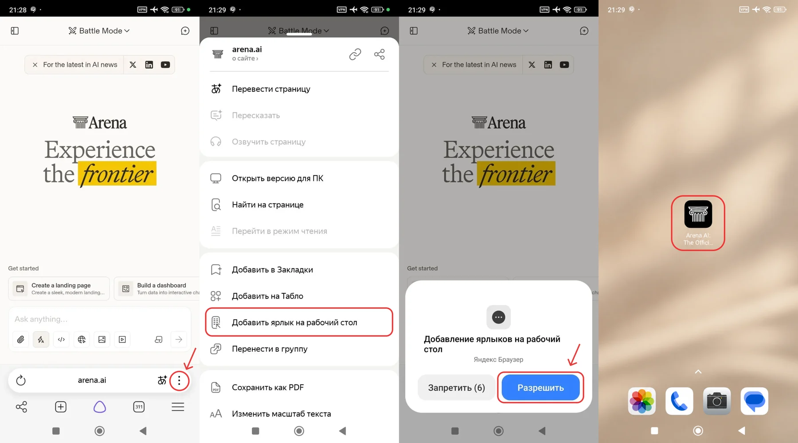
Если вы заходите в Arena.ai с телефона, необязательно каждый раз вручную открывать браузер и вводить адрес сайта.
На Android можно добавить ярлык Arena.ai прямо на рабочий стол. После этого на телефоне появится отдельный значок, и вы сможете запускать сервис быстрее и удобнее — почти как обычное приложение.
1. Откройте Arena.ai в Яндекс Браузере
2. Откройте меню браузера
В нижней части Яндекс Браузера нажмите на кнопку ⋮ с тремя точками.
После этого откроется дополнительное меню.
3. Выберите пункт «Добавить ярлык на рабочий стол»
В открывшемся меню найдите пункт:
«Добавить ярлык на рабочий стол»
Нажмите на него.
4. Подтвердите добавление ярлыка
После этого на экране появится окно с запросом на добавление ярлыка.
Нажмите кнопку:
«Разрешить»
5. Готово! 🎉
После подтверждения на рабочем столе Android появится ярлык Arena AI.
Теперь вы сможете открывать Arena.ai прямо с рабочего стола, не заходя каждый раз в браузер вручную.
По сути, это удобный способ использовать сервис почти как обычное приложение.
💡 Совет: если хотите, можете перенести ярлык Arena.ai на главный экран или в удобное место, чтобы он всегда был под рукой.
VPN, проверенный временем
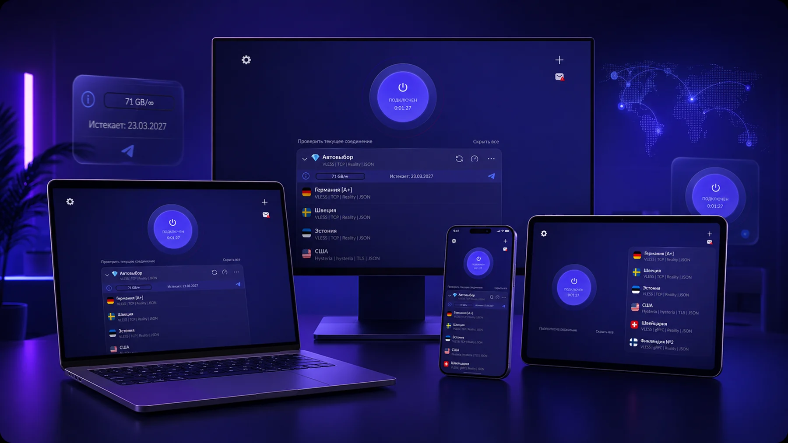
🚀 Arena.ai, сайты или приложения не открываются даже с вашим VPN? Пора попробовать другой вариант.
Я пользуюсь этим VPN уже около 2 лет — удобно, стабильно и без постоянного поиска рабочего сервера.
🌍 Много стран и локаций
⚡ Быстрое переключение серверов
💻 ПК • ноутбук • планшет • смартфон
✨ Простой и понятный интерфейс
🎁 Есть тестовый период — сначала попробуйте и только потом решите, подходит ли он вам.
💬 Пример из практики:
Недавно клиентка после покупки не могла зайти на Arena.ai. Мы попробовали разные варианты: её VPN, смену сети, Wi-Fi, другого оператора и другое устройство — сайт всё равно не открывался.
Тогда я предложил попробовать VPN, которым пользуюсь сам. Подключили — и сайт Arena.ai сразу открылся. Клиентка поблагодарила за помощь, и проблема была решена. ✅
🔥 Не устраивает текущий VPN? Попробуйте этот бесплатно и сравните сами.
Список обновлений в статье
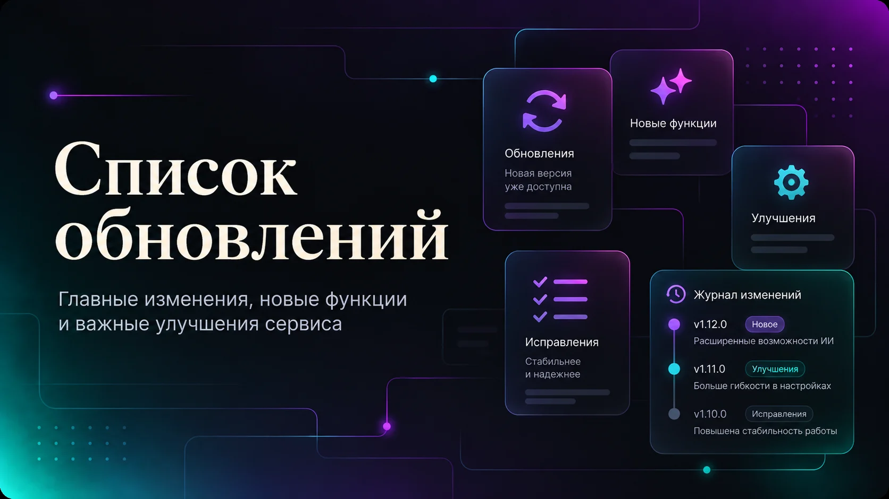
— 11.09.2026
- Добавлен заголовок: №3. Инструменты и возможности режимов
- Добавлен заголовок: Как добавить Arena.ai на iPhone и использовать как приложение
- Добавлен заголовок: Как добавить Arena.ai на Android и использовать как приложение
— 13.09.2026
- Обновлены лимиты по генерации видео
- Доработан текст для легкого прочтения
Информация обновлена 13.11.2026
Ничего не найдено
Попробуйте «регистрация», «видео», «Direct» или «лимиты».
Библиотека промптов
Выберите задачу, скопируйте готовый запрос и замените данные в квадратных скобках.
Частые вопросы
Короткие ответы, которые помогут быстрее разобраться с сервисом.